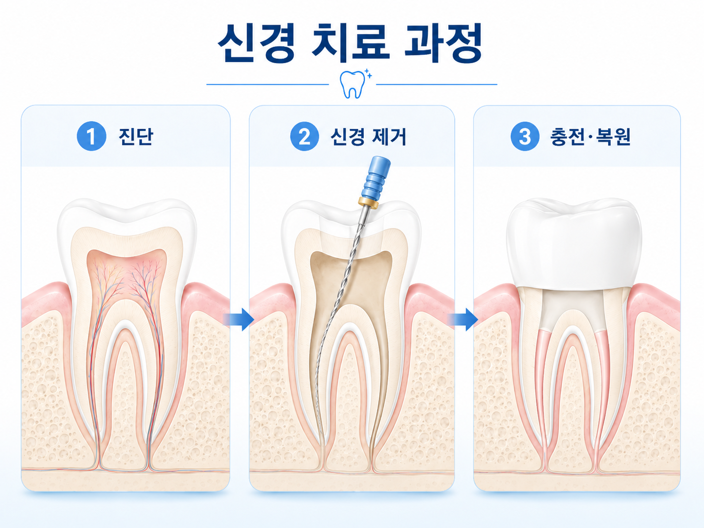
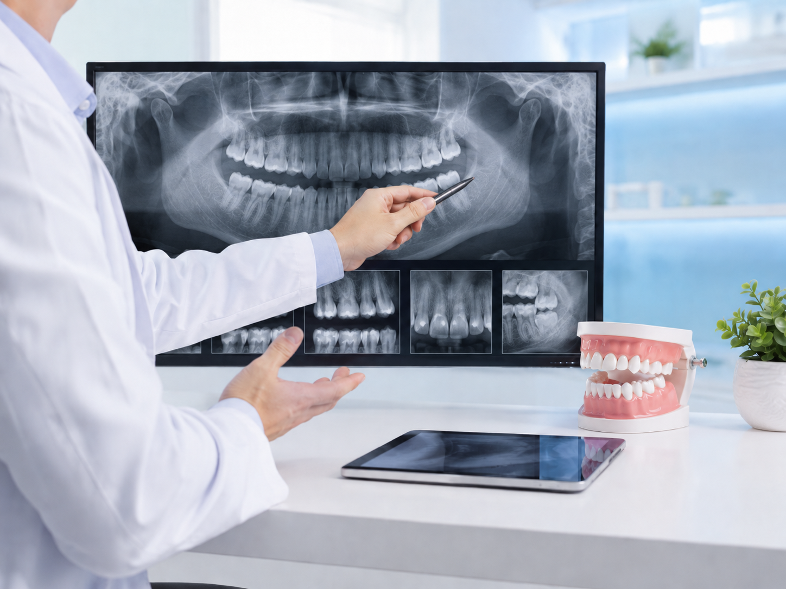

YONSEI LAKE DENTAL CLINIC
신경 치료는 감염되거나 손상된 치아 내부 조직을 제거하고 치근관을 세척·소독한 뒤 밀폐해, 가능한 한 자연치아를 오래 사용할 수 있도록 돕는 치료입니다.

치아 내부 감염 상태와 통증 원인을 확인한 뒤 필요한 치료 범위를 안내합니다.
치아를 뽑기 전, 자연치아를 살릴 수 있는지 먼저 확인하는 치료입니다.
충치가 깊어지거나 외상으로 치아가 손상되면 치아 안쪽의 신경과 혈관 조직에 염증이 생길 수 있습니다. 이때 감염된 조직을 제거하고 내부를 소독한 뒤 밀폐하여 통증을 줄이고 치아 기능을 보존하는 치료가 신경 치료입니다.
아래 증상이 반복되거나 점점 심해진다면 충치가 신경 가까이 진행되었거나 치아 내부 염증이 생겼을 수 있습니다.
찬물이나 뜨거운 음식에 반응한 통증이 쉽게 가라앉지 않는 경우입니다.
가만히 있어도 아프거나 누웠을 때 통증이 심해지는 경우 확인이 필요합니다.
충치가 치아 내부까지 가까워지면 신경 치료가 필요할 수 있습니다.
외상으로 신경이 노출되었거나 염증이 생긴 경우에는 빠른 진단이 중요합니다.

치아 상태와 염증 정도에 따라 치료 횟수와 방식은 달라질 수 있습니다. 연세레이크치과는 필요한 과정을 충분히 설명하고 치료를 진행합니다.
X-ray와 구강검사로 충치 깊이, 뿌리 상태, 염증 범위를 확인합니다.
치아 내부의 감염된 신경 조직을 제거하고 치근관 내부를 세척합니다.
재감염을 줄이기 위해 내부를 소독한 뒤 충전재로 빈 공간을 채웁니다.
치아 손상 정도에 따라 레진, 인레이, 크라운 등 필요한 보철을 안내합니다.
약해진 치아를 보호하기 위해 필요한 경우 크라운으로 치아를 감싸줍니다.
치료 후 불편감과 교합 상태를 확인하고 구강 관리 방법을 안내합니다.
신경 치료가 끝난 치아는 이전보다 약해질 수 있어, 씹는 힘과 균열 위험을 고려한 보호와 관리가 필요합니다.

증상과 치아 상태를 함께 확인해 필요한 치료 범위를 안내합니다.

프라이빗 시술실에서 환자의 편안함을 제공합니다.
통증이 사라졌다고 해서 치아 내부 문제가 해결된 것은 아닐 수 있습니다. 정확한 진단을 통해 자연치아를 보존할 수 있는 방법을 안내해드립니다.
전화 상담하기신경 치료가 필요한지 먼저 확인하고, 치아를 살릴 수 있는 방향부터 신중하게 안내합니다.
통증 원인과 치아 내부 상태를 확인한 뒤 필요한 치료를 설명합니다.
환자분의 불편감을 줄이기 위해 마취와 진료 과정을 세심하게 진행합니다.
치료 후 주의사항과 재감염 예방을 위한 관리 방법을 안내합니다.